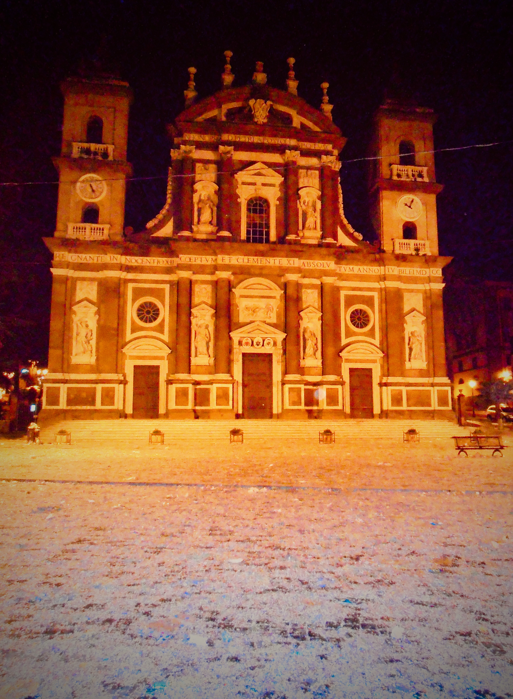

Turismo
Mistery Tour: la Città Tuscolana

Tuscolo è più antica di Roma e ancora oggi la sovrasta, le memorie storiche dell’area sono immense. Nel viaggio alla scoperta di quelle che oggi sono conosciute come le città dell’eccellenza enogastronomica, possiamo incontrare le rovine di epoca imperiale e il Museo del vino presso Monte Porzio, il medioevo e l’Abbazia di San Nilo a Grottaferrata, la città di Frascati con la sua incantevole urbanistica e le magnifiche ville barocche che la costellano. A richiesta, è possibile attivare anche la visita dei borghi che sorgono sulle sponde dei laghi di Albano e Nemi, incastonati nei boschi ai piedi di Monte Cavo, la più alta montagna della zona. L’area tuscolana e i suoi dintorni non avranno più segreti, grazie ai servizi di trasporto e turismo offerti da un team professionale e affiatato. I testi di riferimento sono disponibili su Scritture.
(Servizio in via di preparazione)